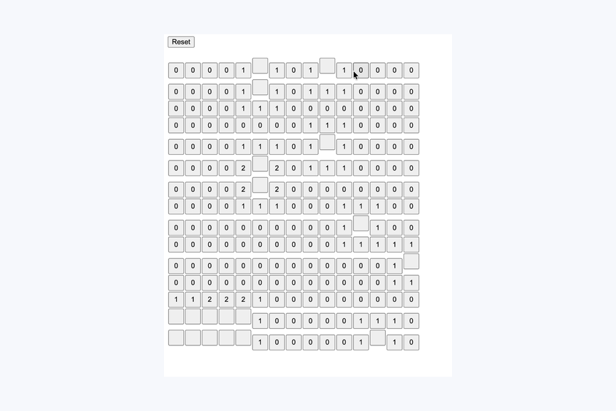
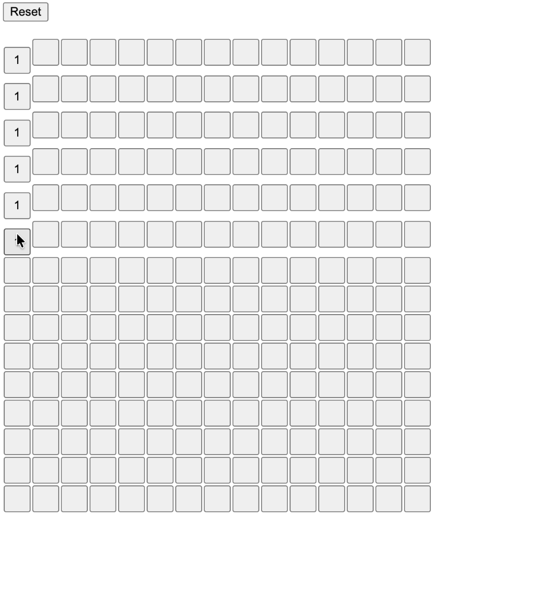
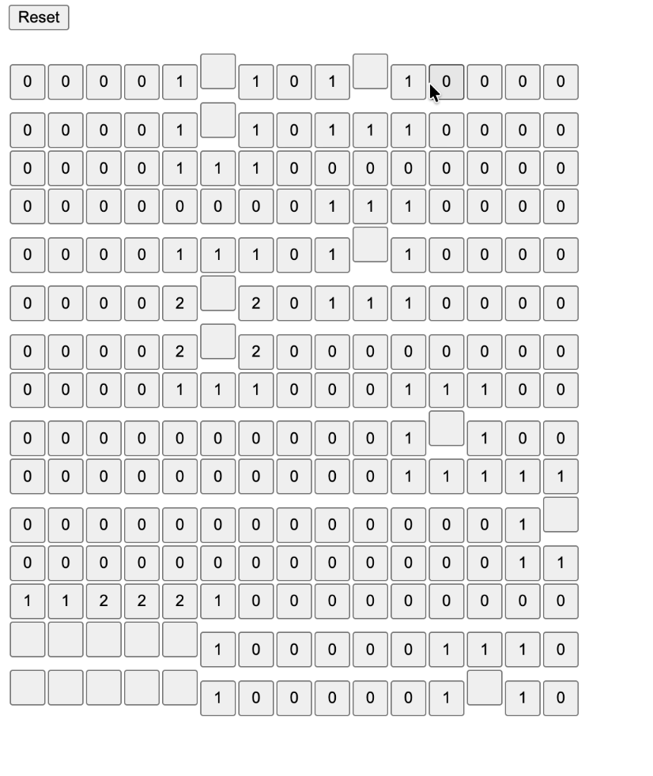

Featured project
Minesweeper Game
A tile-based game project focused on board state, player interaction, win/loss feedback, and visual clarity.

Problem
Create a playable browser game with predictable tile behavior and readable game state.
Process
Built core game logic around hidden cells, bombs, flags, revealed tiles, and player feedback.
Outcome
The project demonstrates interactive programming fundamentals through source files, tile assets, and captured gameplay states.
Screenshots


Watch Gameplay Demo
The screenshots and source files remain the primary evidence. A short gameplay walkthrough is available as supporting context.